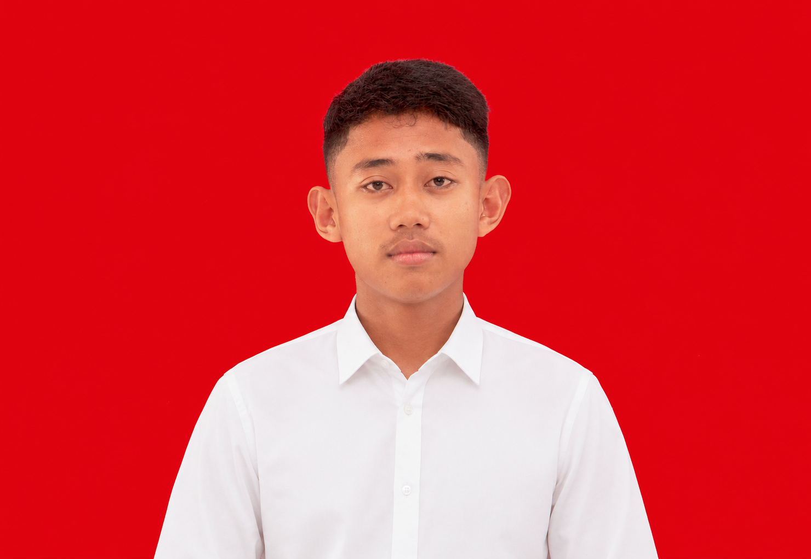
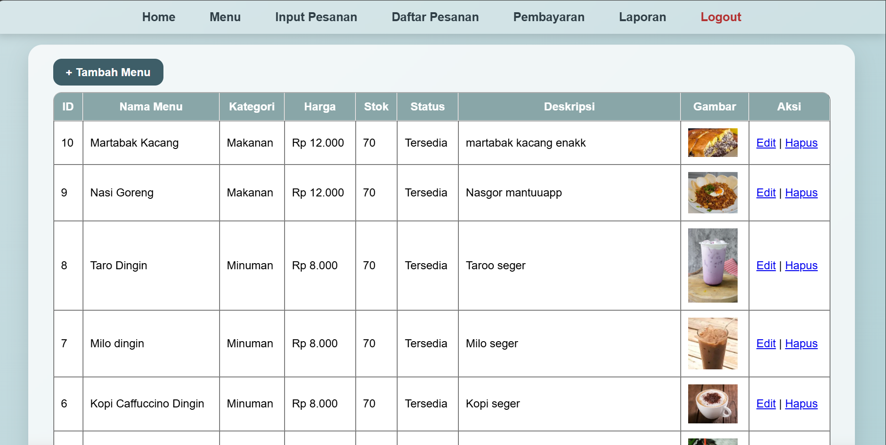
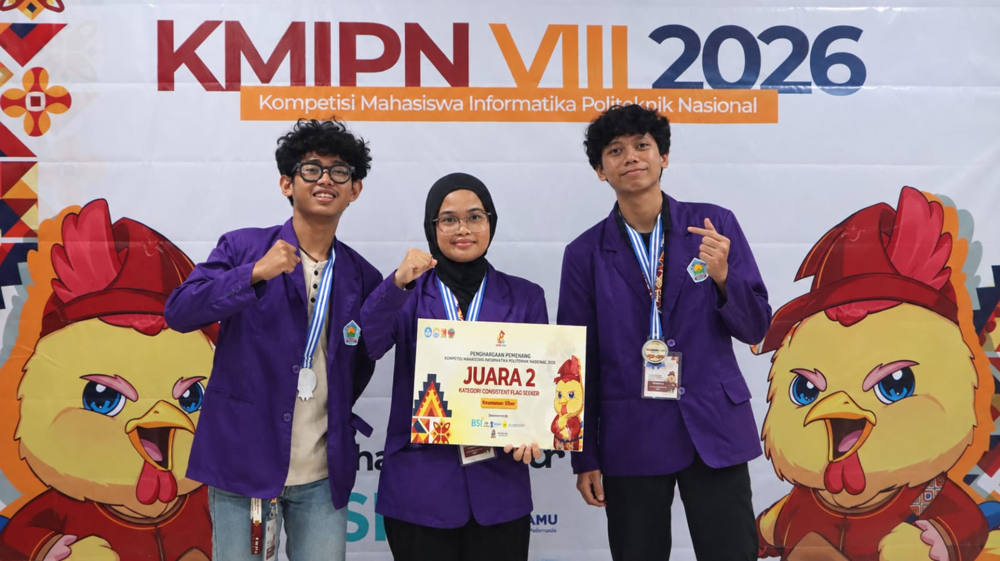
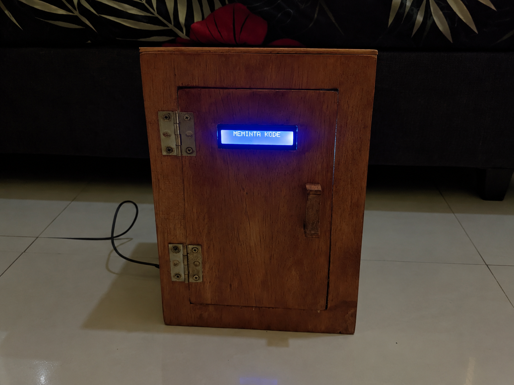

Di sini kamu bisa menemukan kumpulan proyek yang saya kerjakan, sebagai bukti perjalanan belajar dan eksplorasi saya di dunia teknologi. Mari jelajahi karya saya dan lihat bagaimana ide sederhana bisa berkembang jadi solusi nyata.
Lihat Proyek
Mahasiswa semester 5 D3 Teknik Komputer Politeknik Negeri Medan dengan kemampuan di bidang pengembangan web, database, jaringan komputer, Internet of Things, serta Cyber Security. Memiliki Sertifikat Kompetensi BNSP sebagai Junior Network Administrator serta kompeten dalam instalasi jaringan nirkabel, konfigurasi switch, pengalamatan jaringan, dan routing. Terbiasa menggunakan PHP, HTML, CSS, JavaScript, SQL, serta C/C++ untuk mengembangkan aplikasi web terintegrasi database dan sistem monitoring IoT berbasis mikrokontroler, sensor, dan aktuator. Memiliki kemampuan pemecahan masalah teknis serta siap terus berkembang di bidang web development, jaringan komputer, embedded system, dan IoT.
Hubungi Saya
Membuat halaman web kasir di warkop agam setiabudi, dengan rapi dan semantik.

Juara 2 Lomba Cyber Security pada KMIPN VII

Rancang bangun brankas dengan kode OTP
Email: mhdirganchairilmahfiz@gmail.com
Instagram: @inrainboows